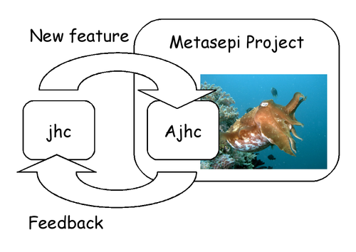

What is Ajhc?
A fork of jhc. And also a Haskell compiler.
Why need Ajhc?
Ajhc's mission is to keep contribution to jhc in the repository. The upstream author of jhc, John Meacham, can't pull the contribution speedy, because he is too busy. And we should feedback jhc any changes.

Ajhc is, so to speak, an accelerating engine to develop jhc.
How to install
It's easy to install Ajhc on Debian flaver system.
$ sudo apt-get install make locales autoconf libreadline-dev \
libwww-perl libconfig-yaml-perl graphviz haskell-platform drift pandoc \
libghc-readline-dev libghc-utf8-string-dev libghc-hssyck-dev libghc-pandoc-dev
$ git clone git://github.com/ajhc/ajhc.git
$ git checkout arafura
$ cd ajhc
$ autoreconf -i
$ ./configure
$ make
$ sudo make install
$ ajhc --version
ajhc 0.8.0.0 (-0)
compiled by ghc-7.4 on a x86_64 running linux
Usage
Please read Jhc User's Manual.Contact
Dive into https://github.com/ajhc.